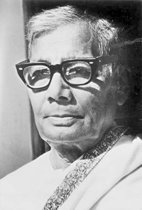

Jasimuddin (1 January 1903- 13 March 1976), popularly called Palli Kabi (lit.'Pastoral Poet'), was a Bengali poet, lyricist, composer and writer widely celebrated for his modern ballad sagas in the pastoral mode.[1] Although his full name is Jasim Uddin Mollah, he is known as Jasim Uddin.[2] His Nakshi Kanthar Math and Sojan Badiar Ghat are considered among the best lyrical poems in the Bengali language.[3] He is the key figure for the revivals of pastoral literature in Bengal during the 20th century.[1] As a versatile writer, Jasimuddin wrote poems, ballads, songs, dramas, novel, stories, memoirs, travelogues, etc.[4] Born in Faridpur, Jasimuddin was educated at Culcutta University where he also worked as Ramtanu Lahiri assistant research fellow under Dinesh Chandra Sen from 1931 to 1937.[5] In 1938, he joined the University of Dhaka and taught there for 5 years.[5] In 1944, he joined the Department of Information and Broadcasting of the then government and retired in 1962.[5] "An ardent supporter of socialism" and Bengali language movement, Jasimuddin was "one of the pioneers of the progressive and non-communal cultural movement" during 1950s and 1960s.[5] He was awarded the President's Award for Pride of Performance in 1958, Ekushey Padak in 1976 and Swadhinata Dibas Puruskar posthumously in 1978.[5] He rejected Bangla Academy Award in 1974.[5] In January 2018, Bangla Academy announced Jasimuddin Literary Award, a biennial award to be given for life-time contribution to Bangla literature.[6]á